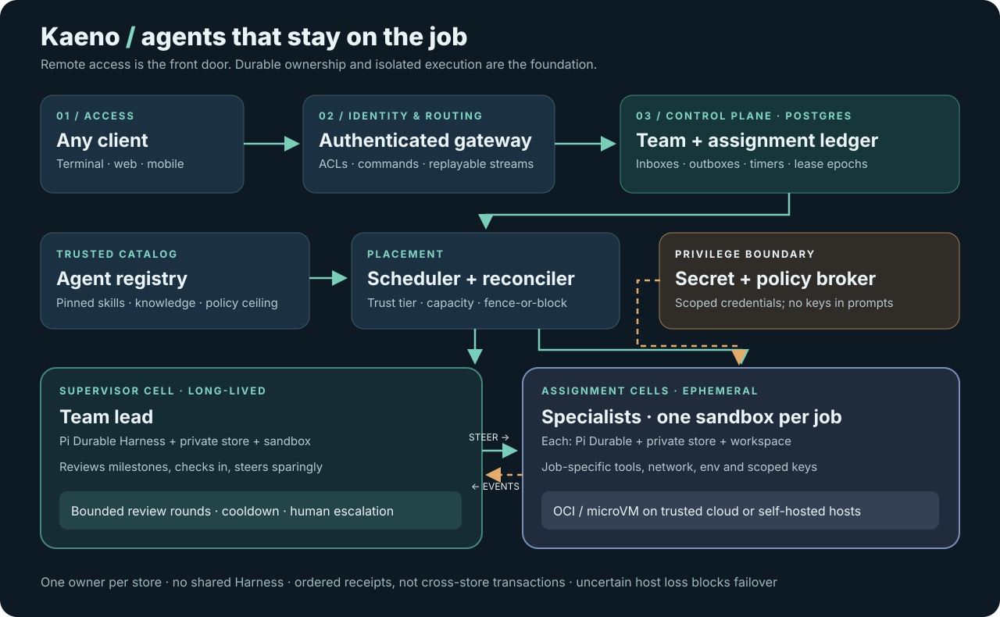

One team.
Anywhere.
Redesign Kaeno as a remotely accessible, durable team of specialized agents. Every assignment gets its own real execution boundary; a persistent supervisor coordinates the work without owning the workers’ state.

Device-independent access
Terminal, browser and mobile use the same authenticated API and resumable event stream. Disconnecting a client never stops an agent. Stable team conversations live behind the service, not in any UI.
Agents are versions, not processes
Registry entries pin model, instructions, signed skill bundles, knowledge sources and capability ceilings. Each job selects a version and a narrower grant; a model cannot create its own permissions.
One job, one sandbox
Fresh workspace, Pi Durable Harness and private store per assignment. OS-level filesystem, network and resource controls; scoped short-lived keys issued after placement. Changing the environment means quiesce and replace, not editing a prompt.
Check in, don’t hover
A long-lived supervisor is a Pi Durable agent too. Durable milestones and timers prompt bounded reviews; steering goes through a queued command at a turn boundary. Budgets and cooldowns prevent loops; uncertain cases escalate to a human.
Run where the hardware is
Trusted cloud and self-hosted hosts advertise capacity, isolation and trust tiers. A scheduler matches job constraints and secret policy. The same cell protocol runs on either host; no provider-specific agent logic.
Own each failure boundary
Postgres owns assignments, inboxes, receipts and leases; each Pi store owns its own conversation. Stable IDs make retries safe at defined boundaries. A lost host is fenced or blocked, never blindly duplicated.
The work loop
Safety boundary: Pi Durable is durable within a single store; it is not a distributed transaction engine or a remote scheduler. Store migration requires a sealed checkpoint and exclusive ownership. If a lost host cannot be fenced or restored safely, pause for operator recovery. External writes need idempotent effect handling or human approval.
What changes from today
Retire the TUI-owned local Harness, loopback-only lock, same-process child conversations as worker isolation, and pathname-based “sandbox.” Keep Pi Durable and a thin terminal client, but move ownership to the service and isolated runtimes. Migrate old local history as read-only provenance; do not pretend existing child tasks can be resumed on another host. Build first: one authenticated API, ledger and isolated local worker with crash-replay tests; then supervision, remote clients and additional host pools.